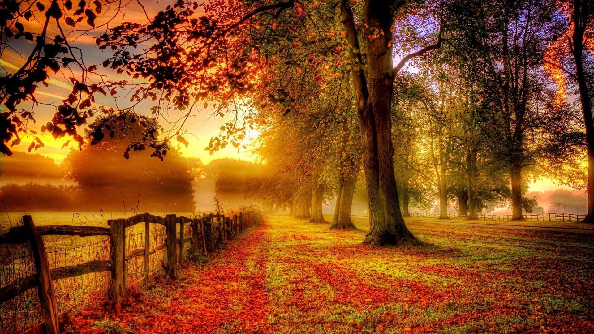
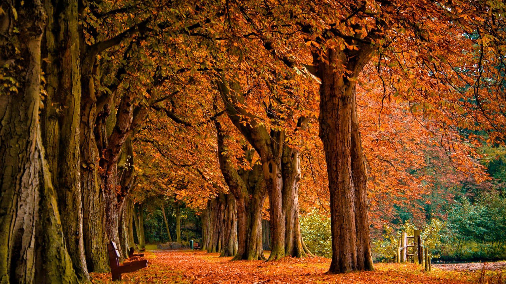

O outono é uma das estações mais encantadoras do ano. Ele marca a transição entre o calor do verão e o frio do inverno, trazendo consigo mudanças visíveis na natureza e no clima. As temperaturas começam a cair suavemente, e o ar se torna mais fresco e agradável. Uma das características mais marcantes do outono é a transformação das folhas. As árvores, antes verdes e cheias de vida, ganham tons dourados, alaranjados e avermelhados, criando paisagens de tirar o fôlego. Esse espetáculo natural simboliza não apenas a mudança das estações, mas também a beleza dos ciclos da vida. Além disso, o outono é um período de colheita. Muitas frutas e vegetais típicos da estação, como maçãs, abóboras e uvas, são colhidos nesse período, o que influencia a culinária e as tradições culturais em várias partes do mundo. O outono também convida à reflexão. Com dias mais curtos e noites mais longas, é comum que as pessoas passem mais tempo em casa, aproveitando momentos de tranquilidade. É uma época propícia para desacelerar, organizar ideias e se preparar para os desafios do inverno. Em suma, o outono é uma estação de transição, de beleza serena e de renovação. Ele nos lembra que toda mudança tem sua própria poesia e que há algo de especial em cada fase do ano.
Essas sao fotos ilustrativas da estação de outono:
  Conhecimento sobre o Outono